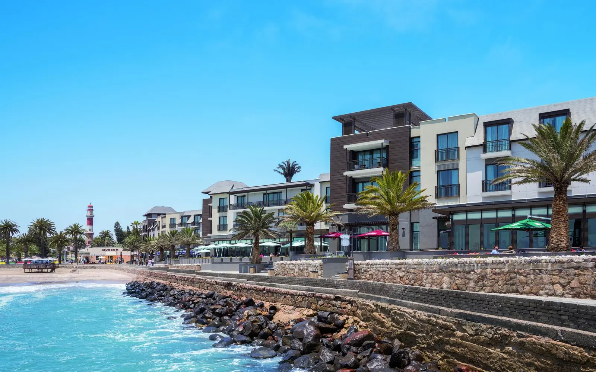
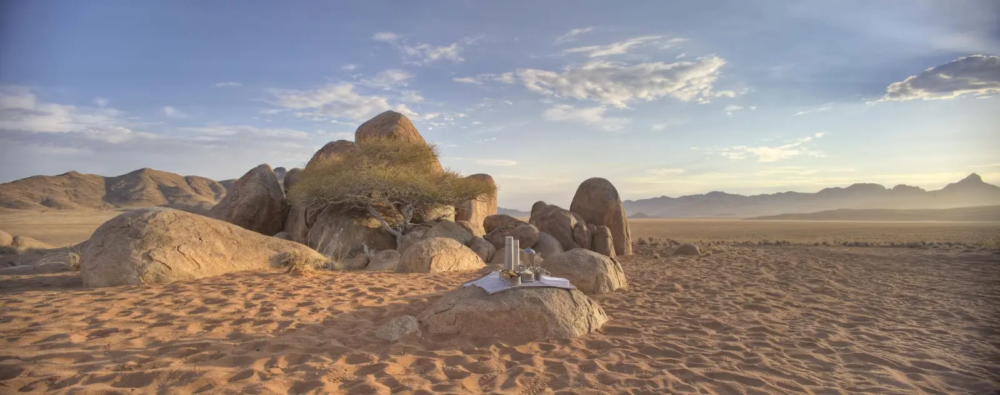
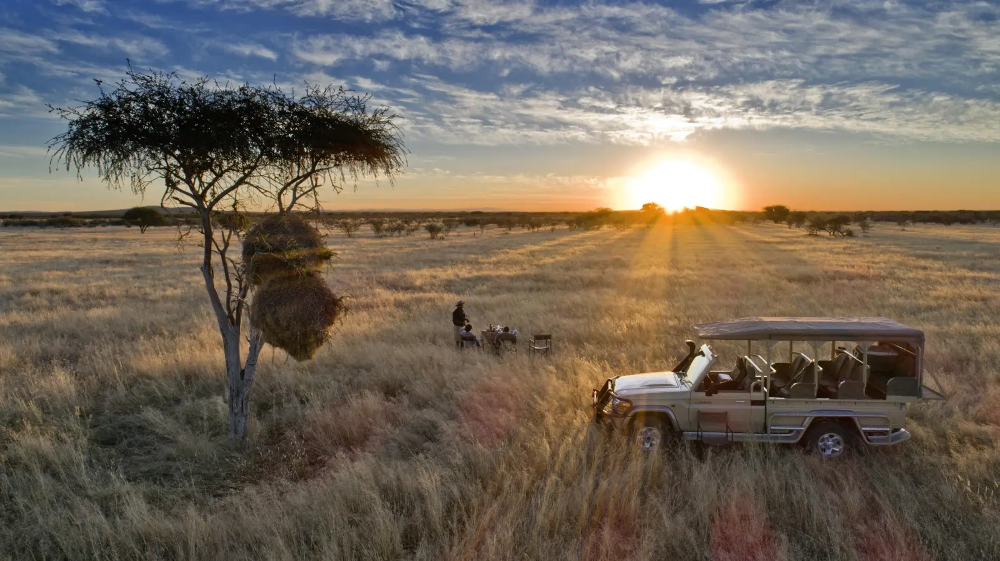

Namibia is one of Africa’s most recognisable landscapes, yet its strongest commercial proposition is not a single dune, safari or coastal stop. For the European travel trade, the opportunity lies in the country’s extraordinary contrasts: the Namib Desert, Atlantic coast, rugged Damaraland, wildlife-rich Etosha and a capital that provides a practical gateway into one of Southern Africa’s most distinctive journeys.
The result is a destination that rewards careful pacing. Namibia can work as a premium self-drive, privately guided or fly-in journey, and its vast geography makes the design of the route as important as the individual experiences.
Sell the contrast, not only the dunes
Sossusvlei is the image that often opens the conversation: immense red dunes, sculpted light and the stark clay pan of Deadvlei. But a stronger itinerary uses the desert as the opening movement rather than the entire story. From there, the landscape changes dramatically toward Swakopmund and the Atlantic, through the geological wilderness of Damaraland and finally into the wildlife concentrations of Etosha.
ATI Holidays’ Namibia programmes demonstrate the range available to the trade, combining Sossusvlei, Swakopmund, Twyfelfontein, Damaraland, Etosha and other northern reserves through self-drive, fly-drive and privately guided formats. That flexibility allows the same destination to be shaped for independent travellers, couples seeking privacy, mature clients who prefer guided logistics, or time-sensitive travellers who want to fly between remote regions.
Sossusvlei: give the desert time
The temptation is to treat Sossusvlei as a photographic stop. It works better as an experience in its own right. Two nights allow an early start into the Namib-Naukluft landscape, time for Deadvlei and Sossusvlei, and the possibility of adding a guided walk, nature drive or hot-air-balloon experience without turning the stay into a race.
For premium clients, accommodation and setting become part of the value proposition. The desert is not simply something to see; it is something to inhabit for a short time—sunrise, silence, stars and distance all contribute to the sense of place.
Swakopmund and the coast: change the rhythm
The Atlantic coast provides the itinerary with a deliberate change of pace. Swakopmund adds cafés, architecture and a comfortable base for coastal experiences, while nearby Walvis Bay and Sandwich Harbour bring desert and ocean together in a way few destinations can replicate.
Scenic flights, marine excursions and desert adventures can sit alongside slower time in town. A Namibia itinerary can therefore be adventurous without requiring every traveller to experience it in the same way.

Damaraland and the Skeleton Coast
North-western Namibia is where the country’s scale becomes most apparent. Damaraland brings mountains, ancient rock art, desert-adapted wildlife and wide-open country. The Skeleton Coast adds an entirely different mood: fog, shipwreck history, Atlantic wilderness and long stretches where isolation is the attraction.
These areas are particularly well suited to clients who have already travelled elsewhere in Africa and want something less conventional. In the most remote sections, fly-in travel can turn distance into part of the experience rather than a logistical obstacle.

Etosha: finish with wildlife, not repetition
Etosha gives the journey a strong wildlife chapter without making Namibia feel like a conventional safari circuit. Its salt-pan landscape and waterhole-based game viewing create a visual language distinct from the desert and coast. Wildlife becomes another layer of the country rather than the only reason for travelling.

What European advisors can package
| Journey shape | Length | Best suited to | Why it sells |
|---|---|---|---|
| Windhoek + Sossusvlei + Swakopmund | 6–7 nights | First-time Namibia; shorter trips | Desert and coast with manageable pacing. |
| Sossusvlei + Swakopmund + Damaraland + Etosha | 10–12 nights | Classic Namibia; couples; repeat Africa | The strongest all-round contrast of landscape and wildlife. |
| NamibRand or Sossusvlei + Skeleton Coast + Etosha | 8–10 nights | Premium fly-in; time-sensitive clients | Remote wilderness with less road time. |
| Namibia + Botswana or Victoria Falls | 12–16+ nights | Southern Africa combinations | Pairs desert landscapes with delta or falls experiences. |
Higher value through better design
Namibia rewards advisors who sell the journey rather than individual components. Private transfers, well-selected lodges, a suitable 4×4, an experienced guide where appropriate, scenic flights and reliable on-ground support can all add value without adding clutter.
Airport arrival support, itinerary briefing, travel documentation, marked maps, emergency assistance and locally based consultation help turn a geographically ambitious trip into a manageable client experience.
Tourism is already moving strongly
Namibia recorded 1,257,093 tourist arrivals in 2024, a 45.5% increase from 2023, according to the country’s official tourism statistics. Holiday travel accounted for 47.5% of tourist visits, while the average stay was 14 days. Germany, the United States, the United Kingdom, France and the Netherlands were among the leading overseas source markets.
Namibia beyond leisure
The wider Namibia story is increasingly important for executives and investors. Energy and green hydrogen, mining and critical minerals, oil and gas, transport and logistics, tourism and hospitality, agriculture and value addition all contribute to an economy seeking greater diversification.
Walvis Bay and Namibia’s regional corridors give the country a strategic role connecting landlocked Southern African markets to global shipping. Official investment promotion also identifies luxury accommodation, boutique adventure, cruise, film tourism and MICE as areas with room for further investment.
For European executives, the practical proposition is not that every holiday should become a business mission. It is that Namibia can support both. A traveller attending meetings in Windhoek or Walvis Bay can add a carefully designed leisure extension; an investor exploring energy, logistics, mining or tourism can combine market discovery with a destination experience that gives context to the country’s geography and infrastructure.
Practical selling notes
- Design around distance; road time should be part of the itinerary logic.
- Match self-drive, private guiding or fly-in travel to the client.
- Protect preferred lodges and remote properties early.
- Use wildlife conditions, desert temperatures and coastal weather to shape the route.
- Confirm current air schedules, baggage conditions and border requirements for regional combinations.
The Resplendent approach
Namibia is best sold as a journey of scale, contrast and intelligent pacing. We work across premium leisure travel, tailored African itineraries and executive mobility, allowing international travel professionals to combine Namibia’s strongest experiences with the practical coordination required to deliver them smoothly.
For European advisors, the proposition is straightforward: sell Sossusvlei, certainly—but build the journey around everything Namibia becomes after the dunes.
Sources: Namibia Ministry of Environment, Forestry and Tourism; Namibia Investment Promotion and Development Board; World Bank; International Monetary Fund; and destination information supplied by ATI Holidays.
From editorial to journey
Experience Namibia beyond the dunes.
Let Resplendent shape the desert, coast, wilderness and wildlife around the right pace for your journey.
Plan Your Namibia Journey